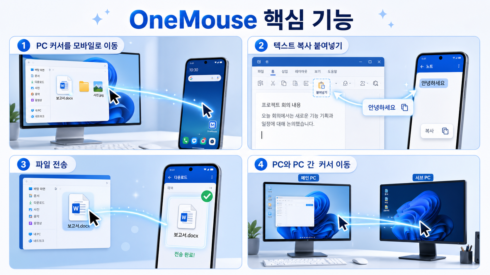

폰을 PC 옆 화면처럼 제어
PC 모니터 가장자리로 마우스를 밀면 Android 화면으로 넘어가 클릭과 스크롤을 이어서 사용할 수 있습니다.
Use Cases
어려운 네트워크 설정을 먼저 이해할 필요는 없습니다. 자주 쓰는 작업을 기준으로 보면 OneMouse가 어디에 필요한지 바로 알 수 있습니다.
PC 모니터 가장자리로 마우스를 밀면 Android 화면으로 넘어가 클릭과 스크롤을 이어서 사용할 수 있습니다.
검색어, 메신저 답장, 앱 입력칸처럼 폰에서 타이핑이 필요한 순간에 PC 키보드를 그대로 씁니다.
PC에서 파일을 잡고 작은 드롭존에 놓으면 선택된 Android 또는 다른 PC로 바로 보냅니다.
Android에서 선택한 텍스트를 PC로 보내거나, 반복 작업이 많을 때 클립보드 흐름을 더 편하게 만듭니다.
서브 PC를 배치해 두면 마우스를 넘겨 다른 PC를 제어하고 파일도 주고받을 수 있습니다.
공유기나 인터넷이 없는 환경에서도 블루투스로 폰과 다른 PC에 연결해 마우스·키보드·클립보드·파일을 그대로 주고받습니다. 여러 기기를 동시에 연결할 수도 있습니다.
PC 앱은 기기별 Ctrl + Alt + 1~9 단축키를 표시하고, 다시 누르면 연결을 끊습니다. 연결과 복귀 상태는 작은 데스크톱 알림으로 확인합니다.
Android 앱의 전원 버튼으로 연결 대기와 입력 수신을 켜거나 끌 수 있어 사용하지 않을 때는 조용히 멈춥니다.
대상 기기에서 커서가 돌아오지 않을 때는 PC에서 Ctrl + Alt + Backspace로 입력을 되돌릴 수 있습니다.
광고 제거, 여러 PC 저장, 더 자유로운 파일/클립보드 전송이 필요할 때 Pro로 전환합니다.
Core Features
PC와 모바일 간 커서 이동, 텍스트 복사 붙여넣기, 파일 전송, PC와 PC 간 커서 이동 흐름을 짧은 만화 형식으로 정리했습니다.

Setup Flow
PC 앱과 Android 앱 화면에 나오는 순서대로 진행하면 됩니다. 복잡한 네트워크 설정은 앱이 처리하므로 화면에 나오는 단계만 따라가면 됩니다.
Windows에서 OneMouse를 켜고 화면 하단의 QR 코드 또는 6자리 코드를 확인합니다.
PC 마우스와 키보드 입력을 받기 위해 Android에서 접근성 권한을 켭니다.
같은 Wi-Fi에 있는 PC를 찾고 QR 스캔 또는 6자리 코드로 내 기기인지 확인합니다.
PC 화면 가장자리에 폰이나 다른 PC를 배치한 뒤 마우스를 그 방향으로 넘깁니다.

Docs
처음 설치하는 사용자는 사용 가이드만 보면 됩니다. 연결이 막힐 때는 도움말로 원인을 좁히고, 권한과 데이터 처리 방식은 기술/보안 안내에서 따로 확인할 수 있습니다.
Demo
최신 온보딩과 연결 흐름을 기준으로 PC 실행, Android 권한, 페어링, 위치 배치, 입력 전환까지 한 번에 확인할 수 있습니다. 설치 전에 실제 앱 화면의 순서를 먼저 보는 용도입니다.
Before You Connect
OneMouse는 사용자가 가진 기기끼리 직접 연결하는 도구입니다. 같은 네트워크, Android 권한, 페어링 상태, 사용 환경의 보안 정책만 먼저 확인하면 대부분의 설정은 앱이 처리합니다.
Free / Pro
Free 모드에서도 기본 연결과 입력은 계속 사용할 수 있습니다. Pro에서는 광고와 전송/기기 제한이 해제됩니다.
Download
Windows 버튼은 최신 GitHub 릴리스의 Setup 파일로 자동 연결됩니다. Android는 Google Play와 Galaxy Store 링크를 함께 제공합니다. PC는 Windows 10/11 환경을 우선 지원합니다.
최신 Setup 파일을 확인 중입니다.
Windows 다운로드접근성 서비스를 켠 뒤 PC와 페어링합니다. 알림 권한은 연결 서비스를 시작할 때 필요한 경우에만 요청됩니다.
Google Play 보기Galaxy Store 버전은 삼성 갤럭시 기기에서 스토어 앱으로 열어 설치할 수 있습니다.
Galaxy Store 보기